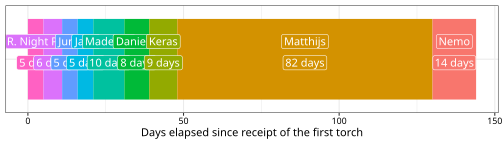
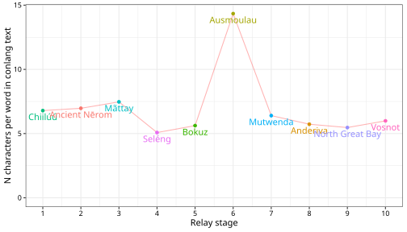
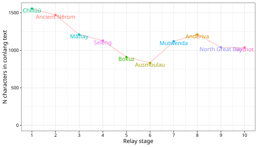
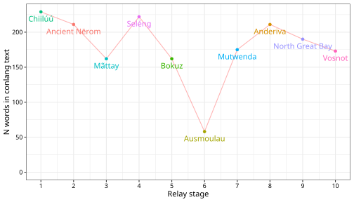
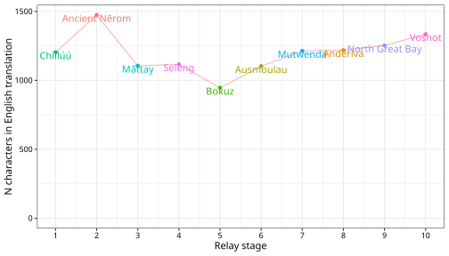
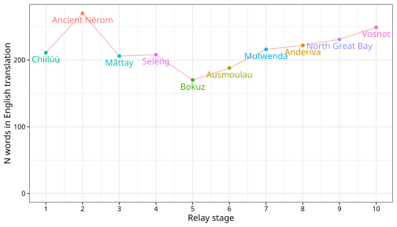

⛈️ I Ring
🏃 Participants
The table below shows the ten participants that took part in this ring, the languages used as well as the dates at which the torch was completed/handed over alongside links to PDFs of the torches—which can also be viewed below—and other documents. Participants were (initially) given a (very flexible) five days to complete the tasks of deciphering the text they received, translating it into their language and composing their own torch document to pass on to the next participant.
| Stage | Participant | Language1 | Torch completion date | Torch etc. |
|---|---|---|---|---|
| 1 | Miles Wronkovich | Chiilúú | 6 Jan. 2026 | |
| 2 | Schwar & Kate | Ancient Nērom | 11 Jan. 2026 | |
| 3 | R. Night Petrichor | Mãttay | 17 Jan. 2026 | |
| 4 | Juno | Seléng | 22 Jan. 2026 | |
| 5 | Jake Penny | Bokuz | 27 Jan. 2026 | |
| 6 | Madeline James | Ausmoulau | 6 Feb. 2026 | |
| 7 | Danielle Dandylion | Mutwenda | 14 Feb. 2026 | |
| 8 | Keras Saryan | Anderiva | 23 Feb. 2026 | |
| 9 | Matthijs Krul | North Great Bay | 16 May 2026 | |
| 10 | Nemo | Vosnot | 30 May 2026 |
The timeline below further illustrates the amount of time taken to pass the torch by each participant except the relay master, Miles.
🔥 The torches
As well as being available for download above, each torch (or best equivalent) can be viewed in the tabs below. Some include an English translation, others not, but this can be seen for all languages in the video and slides above as well as on this page below.
🌈 The arc of the conlang relay is long and it bends towards chaos
This is the bit you’re probably after: the text and its English translation at each stage of the relay.
🥰 Miles – Chiilúú
Chupuu chúúhu ketíí pííne Xipúúpá púnáá Sichuu yeng xoonchimáá áánu suwamáá ráákéésu mééhi. Ráákéésu kim má púnáá Méhuníí xaa Súúsichi, sichi háyu ráákéésu.
Chupuu kúú ketíí úúhi chúúhu hóóxa chúúmáá iichoó púnáá óóngáá yeng sichi ííha sixúúm kúú ííchu sichi háyu pííshímu. Máácha kuúshi kúú xáá chawúú ííchú xúúfó chóochúúm nii áánu cháyu tsiifaamáá.
Súútu Chupuu oonyáá chá ííchú ínsha mooxúú chiim kaa háyu shichá. Cháyu kiyaa mishaa mooxúú sááhu úúhi kiilú oonyáá chá ííchú Chupuu kîxáá áánu tsáá chá púnáá uu’oláá.
Kú tsáá yeng kiyaa su Chupuu ketíí cháhí ííchú uuʼoxíí. Chá mishaa nitá yeng kiyaa úúhi chǎchí Chupuu háyu tsipí. Xiichiítéé kááng tsiim róó ííchú uuʼoxíí.
Kiyaa xáá xáá chǎchí púnáá Chupuu háyu sipí yeng ínsha púnáá kú mooxúú la háyu lúúxaá kúú. Kóotaa Chupuu háyu sipí úúhi ketíí ixuu chikíí Chupuu cháhí úúhi nitá yeng hutiímáá úúhi pi ííchú ínsha.
Máácha kuúshi háyu sííyáá mééhi mishaa ííha leewúú nitámáá úúhi pííne yúúmhe kúmimáá íchu kúsa yáli íchu kúú. Hutií kú cháwuu súúsan wikáá úúhi kaatoo pǐ. Kóotaa kú cháhí yaa ííchu uuʼoxíí chikíí úúhi pííne kúmimáá kúsa yáli kúú háyu cha púnáá xoonchimáá xiichií kúsa fu tsayú kû kúú táá xóónchi.
Hutií níchíifo má wikáá xoonchimáá má ketíí chelá ííha hóóxa chupuu chúúhu. Máácha kuúshi háyu sííyáá kúú chúú iichoó xoonchimáá má ixuu kú chii chupuu kúú, háyu póo chátée iráá ketíí chúú iichoó saa Súúsichi.
The drowned dove flower is native to Xipʼuupát and used to honor some deities, especially Súósichí, the freshwater deity.
At freshwater temples, doves were drowned into a basin of freshwater from the rivers as a sacrifice to Súósichí. On large holidays, villages celebrate around the fire pit and socialize.
One member, Shupúú, sat close to the fire to stay warm and kept to themself. Another member decided to sit next to Shupúú and invited them into the woods to wander.
As they were walking, Shupúú was shoved into a large tree. They shouted as someone bit at their neck. A flash of light appeared, casting a shadow onto the tree.
They continued to gnaw into Shupúúʼs neck, while the fire behind them grew more violent. Once their neck was split, Shupúú screamed one last time and rain fell from the sky.
Some villagers went to inspect the scream and found a pile of wet ashes and bones. They were drunk so they ignored it. Once they returned, they found the ashes and bones gone but instead found white flowers bloomed with a dark center.
These flowers became known as drowned dove flowers because of this. When an offering needs made to the freshwater deity, villagers use these flowers instead of doves.
✒️ Schwar & Kate – Ancient Nērom
amōgodāżom mīṡi aot tozōntor meme sōnem vānrēm aot kāmage aot Xipúúpá púnáá Sichuu. age ṡō dēno, onażo sōnem vānrīw om, kēm tēcażo Súúsichi aot sōnendoj.
īssa sōrendo, simonr żenōca, tōrtogożo mīṡi aot tozōntor age kitō kārmaj. simonr semāṡadākem ṡō, ajgondāżokaj ōnrica-ktēnca simonr konnem kitō, kēm sōrasożo meme saderēm age kāngaridom.
oṡekorentożom ewrīw om aot gōm mīṡi simonr kitō. vēntojadāżorīw tojācocarīw, kēm ṡārondāżo meme gēta, ewrīw kā beṡīdāżom rīw mīṡi age som sākensoca.
ennadāżorīw ewrīw tojācocarīw, simonr oṡekorentożom rīw mīṡi age konnem sākensoj, kāsāt taēvendāżo mīṡi wēkem sewkādāżoca tojācocarīw kāroca aot mīṡi. sāt lenvo, smodāżo entoraj meme entēgar age anden aot konnem sākensoj.
kowedāżo tojācocarīw age som kāroca aot mīṡi meme sewkādage aot rīw, wēkem sōrendāżorīw kitō rīw. simonr korāsadāżo bēmam, torēdākem kāroca aot mīṡi meme onta asāca. taēvendāżo mīṡi nenē simonr tokāmodāżo sōnem aot bēmam kitō.
ennadāżom cētirēm aot ōnrica-ktēnca lididendo aot taēvenra. amōdāżokaj rīwsem kerē sōnem lendoj kā sewkādaj. simonr dēṡadāżo bēmam, ajgondāżokaj rīwsem nenē meme rotatom aot mīṡi. simonr korāsadāżo bēmam, entożo rīwsem som konnem sākensoj kā amōdāżokaj entid lendoj age kārmaj aot lem sarendage.
simonr dēṡadāżo bēmam, ēwedākenkaj ṡō vogadom kāmage, kēm ṡotēndākenmod enir vāj mīṡi aot tozōntor. rōn lasottożo cētirēm aot ōnrica-ktēnca, żōttożokaj rīwsem kāmage som rīwsem kā mīṡi, cō forāntenenżo rīwsem age matajom kā agēżorīw Súúsichi.
A drowned dove was found by the flowery bird dieties of Xipúúpá púnáá Sichuu. Within this pantheon is also a deity known as Súúsichi, the fresh-water deity.
Across the river, near the fresh-water temple, the drowned dove was sent in a cauldron of fresh-water. As this happened, the surrounding farm-houses got drunk around the hearth while making merry with friends in celebration.
The younger among them placed the dove by a fire. The elder, acting cruelly, shoved the younger aside and took the dove into the forest.
The younger followed the elder, as they placed the dove into the conifer, and the dove began to scream as the elder began to bite the doves neck. After which something bright shone in the shadow of the conifer.
The elder repeatedly bit into the doves neck, as a fire inside them began to rise like an orca. As it thundered, the doves neck was left with lightning like wounds, and the dove screamed once more as rain fell on the fire.
The people of the farm-houses followed the sounds of the screams, only to find a pile of wet ash and bones. As it rained, they continued to drink and dance in memory of the dove. As it thundered, they arrived by the conifer and found white ashes in a bowl of fully expanded dark roots.
As it rained, this story grew these flowers that knew how be seen like the drowned dove. When the people of the farm-houses die, they send these flowers to each other and to the doves, so that they may die peacefully and be sent to Súúsichi.
🌃 R. Night – Mãttay
Mambu vu ’yyan manh vula vu Suushiji yungata ’Afu Puk Vyrnugu vu vavalyk ryndlu rhã. Kani ’orhõlũ t’ãvũwãrlũ ’yyanka vu rhãvĩshkayynh ’akhãrỹ.
Luvuwka ngulu ngyl vyrnulu anul ka ’orhõkãy khãt’õ vu yinguvlu p’ãkũrỹ. Mimiryninh khãt’õ ndanyu manh khẽtãjỹn yet’õrỹnh qãngỹwãr ngyl ’ylhu yurar ka kaju tanar. Katuk ’orhõkãy khãt’õ ngyl p’ãkũrỹ. ’Atyn tukkay pafar t’ãtõqõ yiyi yin ’orhõkãy pundula ngura yukar. Tukka yinyu va’ury yiyi ’orhõkã manh yiju yin ’orhõkã ’a’akay ’atlatar yaja yurar tukkal mokhẽrỹ. Yin ’a’aqã ’atlakkayynh vyk yurar khãt’õ ka p’ã mylar. ’A’aqã lapuwar yay khõshula mbumbumar. ’Orhõkã yajary yay khõshula ndanyu pundu ’arynkal khãt’õkã nerhã ndanyu punduka ’arynkal shiviry.
Mimiryninka yayajakay va’ury. Kani lufytlayu ’akhary yynh. Khõshula shiviry jakhqõ yay kani ’ylhury yay ’orhõkã kayu rynjury. Khõshula mbumbumar yay kani ndanyu pundulu nuntary yay kani lufytlayu khõolũw rhãvĩs ’aqõs ’aryn ryndlu ’akhãry.
Khõovĩ yay qõmỹkkuka rhãvĩshkay manh ’orhõkãy t’ãvũwãru rynjury miryn. Yi miryninh rynjy qõm, kani ka ’ay ’orhõkãy myrhãvẽkhã ’yndokhõl yiyi ka rynjy qõrhõl furuqõ yay Suushiji rhãkhõl.
There is a water god that is called Súúsichi of potable water among the people of Xipúúpá púnáá Sichuu. They once found a drowned dove with the god’s flower.
Across the river, on sacred lands, they put a drowned dove into a fire basket. Farmers drank by a big fire that danced with friends celebrating while they did this. Their child put the dove by the fire. The elder shoved the child cruelly and took the dove into the forest. The child followed the elder and heard the dove that screamed because the elder bit the dove’s neck. The elder dug into the neck with his teeth because fire did not touch it. The neck bled and the sky thundered. The dove screamed, and the sky wept on the fire in the big tree’s shadow.
The farmers followed the screams. They only found cremains. The kept weeping, and they drank and mourned the dove. The sky thundered, and they went to the big tree and found white cremains in a flower’s black roots.
It rains, and this story tends the flower that mourns the drowned dove. If a farmer dies, they give flowers to them and the dove, thus they die peacefully and be with Súúsichi.
⚒️ Juno – Seléng
Dubí lif de da Rang du nem da Okwa afong Da Sutóm Da Kirít Da Kyopalating te se kyonakísh pa Da Sushidzhi. Wa Ching beláng do moso da Felór loung Da Roundzhop Da Got.
Wa beláng da Ching pot wa Kedzh da Felím afong da Roung gurósh da Okwa pong da Lente kyonakísh. Da Aguroní mek wa Felím kyogurósh-tang pong da Roum da Pounyo da Fyeda. Wa Kinda pot wa Ching beláng ong kulósh da Felím. Da Kinda mo ot te punyo nagut-tang da Ching beláng minta te go pa wameni Chirí. Da Kinda mo ot gash wa Buxu da Nish loung Kyogáf. Tetú se du shud kelóu poung da Nek, mash da Felím na tachan tetú. Da Nek do du bulóut, deng da Kyosiring do roumboumba. Da Ching beláng se gaf minta Reng go afong da Kyosiring pong wa do kuk da Chirí gurósh belák.
Da Aguroní se gash mo do gaf. Te do moso Pokwa tash. Se reng, tetú do nonda, deng da Ching beláng me se buxu-sari. Da Kyosiring se roumboumba pong siring da Chirí gurósh. Pong Ash bi Pokwa beláng loung da Ash belák da Felór.
Da beláng da Ching se buxu-sari pa Reng loung sutori da Felór. Posh Da Aguroní dzhop mo te Ching beláng ge gif Felór, deng da Kouldzhopang dubí loung Shalong loung Da Sushidzhi…
Those who lived there did name the Waters from the Platform of Steam and Stone as sacred to Sushidzhi. A white bird saw the flowers of the Drowning God.
A white bird put a cage of flames from out of the huge flow of water on the sacred land. The farmer make a very large fire at the booze and friends party. A child placed a white bird near the flames.
The elder child evilly struck the white bird as they went for the few trees. The elder child followed a sound of crying and screaming. They made teeth and claw on their necks, but the flame did not touch them. The neck did bleed, then the Greatceiling rumbled. The white bird cried out while rain came out of the Greatceiling onto a burnt black tree.
The farmer followed and shouted. He saw only cremains. It rained, they drank, then the white bird mourned. The Greatceiling continued to rumble above the tops of the trees. Below were white cremains, at black roots of the flowers.
The white bird continued to mourn for rain and imaginary flowers. If the farmer dies and their white bird is given flowers, then all the dead people shall be with peace with Sushidzhi…
✨️ Jake – Bokuz
Muvukup ákok buna dza Susídzep gunga ubuku yíboz vébe zvubekuz. Sa tazu dza nyepa ve Psyaz vopep vébe vunakuz.
Sa tazu dza ubuku yíboz kanu vébe bzbvukuz. Sámbet hudza tsung tsung yah ve nedzu vébe ikukuz. Púmov dza sa tazu vépos yah yum vébe edzokuz. Huna huna púmov dza mokya mokya sa tazu ve zaha fébe in vébe bingukuz. Huna huna púmov dza tazup yéve ve hándzonye, zyega dza yah ve kúdzuk kyi vébe pínye gi dza zbakuz. Buna dza sa tazup yéve huvébe gi vopep vébe sutsíyenye guna gémek zaha fébe ingkuz.
Sámbet hudza handzokuz, dzupekuz. Hudza híme nu huve hukakuz. Buna hugvudza mu’ve mugúnye, sa tazu dza áme ve usim vopukuz. Gi dza tsung zaha venge fébe zbakuz. Sa muv dza zaha vokyepi fébe vopukuz. Guna kahu hudza muv vofuka vébe undzakuv.
Sa tazu dza bunap áme ve nyepap muzvu vosi dzábeng usikuz. Hubuv nyáko sámbet pa psmi huvébe nyepa huve sa tazu vébe suvemábov, Susídze pángube ksána vébe zvubemábov.
Someone called Water lived on Susídze’s sacred geyser plateau. A white bird found the flower with Psyaz.
The white bird perched on a geyser plateau brazier. The farmers lit the biggest fire in the liquor. A child put some white birds near the fire. The oldest child hit the lamest white bird while going to the trees. The oldest child made a bird cry with a shout and then, without having touched the fire, his neck bleeds, and the sky thundered. The person, as the white birds cried, departed heaven and then went to the trees burnt black.
The farmers, shouting, followed. They only saw remains. These people drank water, and then the white bird could ask for release. The sky thundered by the top of the big trees. There was white water underneath. Black cosmos grew on the bottom.
The white bird asked for people’s forgiveness with the flower story. If in the farmers’ deaths you give flowers to the white bird, you will live in peace in Susídze.
🗺️ Madeline – Ausmoulau
Kaumtwausaava Susidsech chwumnrasaava Muvukuch chwumnrajwoovikaumtwauch yualkyoth. Aumouwamvashrunfriroch aumousaava Myasoch shrunfrirshraavitruraumoufnotrauch. Aumouchluinityoovuusichrouchwoi.
Myasosh noroani cadi yualtwaukyofnujautoth. Vlitoova chwumnrafnoscoovlidurawoch. Cooroimisishrunfriroch furvlith. Thicoofochifrauwfriroch furdthaoth. Myasosh maitsharool ujiosloovidthaoch uculdu. Thicoomaki mlaavafrirriidu. Scoodawdu yummalvavlivadthao. Myasosh kyoivi yossoth riidu.
Chwumnramaki yumnoscooth chwumnradawdu yumnoscooth. Noroanisifrirnrivanosicooch. Myasosh scoomaiwa’aumouch scootwavikaumtwauyi vyaaduscoochwoi. Roolculdu siltoosidthao. Myasosh audunomalsimaafich lalshrunyosoth nolsidthaoth.
Myasosh maiwan nonakraduwoi. Muvukush shyaudunosicooch swiviluintrauch lalnosomoth. Susidsesh luintrau’aufauchwumnrawoi dovawoifraa.
The farmer named Muvuku lived at the sacred hotspring, named Susidse, on the plateau. A white bird finds a quail spirit’s flower and the spirit, named Myas, becomes a white bird. Spirit will poison people who overindulge on bird meat.
Myas perches on hotspring plateau’s brazier and they see. The farmer’s children create a fire from the fuel and the fire was big. The child places white birds around the fire. An old child hits a gamey bird around the tree. Myas forces the sky to thunder and lightning strike tree. The bleeding bird caws and the old child shouts. Children move toward blackened burned tree. Myas caws and flies toward them.
The farmer moves toward his children and the farmer shouts toward his children. He sees his birds-eating children. Children beseech the spirit, Myas, to forgive them, so they drink sacred hotspring water. Sky thunders around large trees. Myas creates black cosmos in the pale river under the trees.
Myas demands they sacrifice. Muvuku holds a poison flower in his hand, in order to spare his children. Susidse will be peaceful when poison flower kills the farmer.
🌼 Danielle – Mutwenda
Pen mekaf, gung Susidse wedau ongset mutwup yichu. Gung Mubuku wedau yeangga ni ongset mutwup denaamu. Gung Myas wedau angosen, ezbe unhu zuut uyuupa gachtadaa, azeb ukh enatenat melakh wakne sidru. Puz angosempa, ezbe leashna gemaangu ruusni uyuupa chimu, leashna zhituuz pantu.
Myas fif umutwup umekaf senef bepaachu, ri azeb holaasu. Ukh yeangga fiyumi nwifdyu nefodfu, ri nef nos’hop yanggadu. Fyim ziyuut yuupel den nef padsu. Ufiyumi frupa benfet yuupa den mefa badtu. Myas yu zebemu, dizhit zoukhapa khuzpa badtu. Dankaa yuupapa uyuupa breke luuku, ri ufiyumi frupa boku. Fiyumi na nefadaa, wenau mefa danchu. Myas uyuupa breke luuku, ku azeb fo yuzbi yelaapu.
Yeanggapa na khazeb fiyumi madchu ri azeb na yuzbi danchu. Azeb nezebe huutu- khazeb fiyumi yuupa wakne gemaangu. Fiyumipa ongset umutwup tuu tuupu, ri yuzbi nezebe uz Myas masnu- angosempa ima yuzbi kakhbasheb. Yu yu nisopa khufli bomu. Ni zuut doama, um khufli, Myas khazeb wehon mokhtan zantu.
Myas hwengge madtu. Mubuku ryab ima khazeb fiyumi ima fimuut, azeb zhot’hoz melakh paamu. Mokhtanpa yeangga izyemuun pantu; uz nezebe, Susidse fesatne yichau.
On a plateau, there was a sacred oasis called Susidse, and at this sacred oasis lived a farmer named Mubuku. A spirit named Myas, in the form of a white bird, found the vulture’s flower. And so the spirit was going to poison the people who eat too much bird-flesh.
Myas perched upon the oasis plateau’s hearth and watched. The farmer’s children set fuel ablaze, and the fire grew tall. One child placed white birds around the fire. The older child beat a gamey bird near a palm tree. Myas forced the sky to thunder, but the lightning struck the tree. The bleeding bird cried out, and the older child screamed. The children ran towards the blackened, burnt palm tree. Myas made bird-cries as he flew away from them.
The farmer ran toward her children, calling to them. She saw that her children had eaten birds. The children begged Myas, and drank the sacred water of the oasis, so that the spirit might forgive them. The sky thundered above the tall trees. In the bright stream beneath the trees, Myas brought his dark datura to life.
Myas commanded a sacrifice. Mubuku, bringing mercy to her children, took the poison flower in her hand. The poisonous flower would kill the farmer, and Susidse would remain in peace.
🌶️ Keras – Anderiva
Kutsin kappa gao ia guat kutsin era tua iggha asavani; pae iami Tuserise tsi. Tsini mii kukh usak dzive kukh kanfamaa; pae ughmi Mumbukho tsi. Kumi tumai ia tumbuvani; pae iami Miasa tsi; ia kolokh tsisep ant jighuuvani. Tumai ia pi kolokh puktumakhan an kushe tsia ippere, pi tsiun tsisep pushe dere, kukh ganambo kase ughokh chittashii.
Kappa gao tua iggha ia pu Miasa kumi ao pu kanfot, tunggavani. Usak dzive ukh an olok unga auvokko appanashe, ao ia tunggukhunashii. Kukh olok ao ia pu ngait piktuu attore, isa ukh an olok unga kumi inngu pu kumi kolo andat daasashe, Miasa tolok, picchep mi inngu ia pakhashe, kuppalae tsisep ia beyishe, olok unga an isa ukh uvo uppashe, olok unga kumi appae polo inngu unshin. Miasa unga pin unit, tsisep ia beyinashii.
Usak dzive ukh olok unga ka uvo uppare, unga ka unde, olok unga kaok, unga kolokh tsisep dzivana. Olok unga era tua iggha tua ala dere, Miasa ka tsivusot, tumai ia pin gaima kuvishe, guva mi ife-ife ant puusak, guva mi aun kutsin ngait tuakhun u Miasa kushe polo kase tsia ka ian paddashii.
Miasa kukh guukhat koyiishe, Mumbukho olok unga gaima kumbughore, kushe kase tsia paddashii. Tsia ia usak dzive ukh ambanashe, mii pin Tuserise kaun guk asalumi.
On a plateau there was a sacred oasis whose name was Tuserise. Here there dwelt a farmer whose name was Mumbukho. There was a spirit whose name was Miasa and who resembled a bird. The spirit had found a vulture’s flower and then, having eaten too much bird meat, intended to poison a person.
At the plateau oasis Miasa sat by a fire and watched. The farmer’s children burnt firewood and the fire became big. A child put white feathers near the fire and then the children’s father smelt a strong smell by a palm tree. Miasa was flying and the flash struck the palm tree. The bleeding bird then screamed and the children’s father cried out. Then the children ran to a burning black palm tree. Miasa, running from them, made the bird scream.
The farmer called to his his children and ran to them. He saw that his children were eating a bird. The children drank the sacred oasis water and then pleaded with Miasa for mercy from the spirit. The clouds then swirled while, in a white spring below the clouds, Miasa brought a dark poisonous flower to life.
Miasa demanded a sacrifice. Mumbukho got mercy for the children and then gave a poisonous flower. The flower will kill the farmer and because of this Tuserise will be at peace.
🦉 Matthijs – North Great Bay
iliki ohele huni milaó utu afé; así Tuselise omu yu anomo.
hopihi umu shvele ha afé; así Mumpuho omu yu anomo.
ikemia afé; así vi mutti, Miasa omu yu anomo.
ikemia así ina samilépia fui lusi kameunsu, ina vi numu yu livïsó shu, nao hao vili yilí.
Miasa teshe fui milaó oheli así fui talenni, pilihizi.
hopihi tsotso teshamimi tashamosó, semá teshe yu hopohu.
tsesa teshe fui shulu su isia sosu, tsotso semá fette pelana fui fo muku su alezi.
Miasa yohe’i, teshantse nao pelana yu miohó.
nila asifi vi va’á. u tsotso semá fette así honosó, tsotso semá tashamútsu meke su pelana así slahá.
vi ava’i, Miasa semá slahá.
hopihi así tsotso semá si slehe honosó, tsotso semá vi lipi pilihí.
tsotso semá nao Miasa yu ikemia ele iliyi si yïle shoshunni, semá iliki ohele itili tisevé.
ikemia así tilitsti humu si mutu oasu, así shulu su ohele si asá. Miasa ao meke vilma su lusi si sishí.
Miasa hao siettóva hen’óvu. Mumpuho iliyi yu tsotso semá si ’ashó, nimó Miasa vilma su lusi así así si sishí.
u lisu así nao hopihi así tsoevisasó, Tuselise si issenets eze.
There was a good oasis on a high plateau; its name was Tuserise.
a farmer lived there; his name was Mumbukho.
there was a spirit; its name was Miasa; it seemed like a bird.
The spirit now discovered a flower near a vulture, and now consumed too much bird meat, and sought to poison a person.
While sitting beside a fire next to the plateau oasis, Miasa watched.
After the children of the farmer burned firewood, the fire grew.
A child lay down a white feather beside the fire. Then the father of the children smelled an intense smell by a palm tree.
As Miasa flew, the flare hit the palm tree.
The bleeding bird cried. Then the father of the children called out and the children fled the burnt black palm tree.
Miasa ran from them while the bird screamed.
The farmer called out to the children to run, and then the children saw they were eating a bird.
The children drank good oasis water, while imploring Miasa, that they desired mercy from the spirit.
Then it moved like a swirling cloud, and the cloud went to a bright natural spring. Miasa gave life to a dark poison flower.
Miasa demanded a human sacrifice. Mumbukho obtained mercy for the children but Miasa gave (him) a poison flower.
The flower killed the farmer. And because of this Tuserise will have peace.
🦋 Nemo – Vosnot
mu nosol mirri, ó anggrinna üngünmo kiho. illyesi Tüsélise. ó ngiretta kihef mu ürlel lirel. illyesi Mümpúhori. ó pimborra i kiho. lille müfi i illyesi Mese. enke elmi pe püsinnelel pű müf pű endelle porni pű nono, na-lí pimborra ente orillyekü léfi. na-lí ó Mesana ommote pe lisíl pe anggrinel pű mu mirrel, i erempe. mu-lí lyeféna ngisti risi litef kerni pű lisena oso na-lí. lisena ronnondu tetti pű ümbro lyefi, na-lí küngüppa lyefe riçe pennef kemmili pű onolo pe nirrel. Mesana nosifimbo, mu-lí lisena nüte nirri liri. müppa ótürino lünnge, ó lyeféna i illetef kümfi riçe-k. innüntoref na nirri pű linto milno. müppa ülüngem lyefe, mu-lí Mesana innüte na risél-ok. ó lyeféna endu innúsi ngisti, isto tempef müfi pű iliso. initef nefni na pimbrel Mese, mu-lí likef pono anggrini pű üngünmo. ó pimborra oso o veslel, na-lí nüte anggrini pű ümbro. ó Mesana tonne ürni o elmel pű imbilo i orillinko. ente vonnúhi léfi. ó Mümpúhona millef nefni to lyefél, isto tonnu elmi pű orillinko Mese. elemma lirra püte ngisti. Tüsélisana ündülo.
Atop a tall hill, there was a sweet well. Its name was Tüsélisa. There was a farmer in that land. His name was Mümpúho. Also, there was a spirit. It appeared as a bird and was named Mesa. It discovered a flower near a scavenger, which was a bird that ate a lot of meat, then, then, the spirit wanted to poison a person. So, Mesa sat near a fire near the well on the hill, at that time, it searched. Meanwhile, the children of the farmer lit the logs, which then grew into a fire. A child placed a shining feather near the fire, then the father of those children smelt a strong smoke near the tree. Mesa was hovering above, at that time, the flame reached that tree. The bird was bleeding and shouted, and the children called their father. The children had fled from the burnt dark tree. The children cried for the bird, at that time, Mesa fled from the children. The farmer asked the children to flee, but the children looked at the burning bird. The children begged for mercy from the spirit of Mesa, at that time, they drank water of the sweet well. The spirit became a storm, and then went to the shining well. Mesa gave life to the dark and poisoned flower. Mesa demanded to sacrifice a person. Mümpúho obtained mercy for the children, but Mesa gave the poisoned flower to him. That flower killed the farmer. Tüsélisa was peaceful.
🫣 Then vs now
Now, to give a clearer picture of how things degraded progressed from start to finish, below is a direct comparison of the starting (left) and final (right) texts in both Chiilúú/Vosnot and English.
Chupuu chúúhu ketíí pííne Xipúúpá púnáá Sichuu yeng xoonchimáá áánu suwamáá ráákéésu mééhi. Ráákéésu kim má púnáá Méhuníí xaa Súúsichi, sichi háyu ráákéésu.
Chupuu kúú ketíí úúhi chúúhu hóóxa chúúmáá iichoó púnáá óóngáá yeng sichi ííha sixúúm kúú ííchu sichi háyu pííshímu. Máácha kuúshi kúú xáá chawúú ííchú xúúfó chóochúúm nii áánu cháyu tsiifaamáá.
Súútu Chupuu oonyáá chá ííchú ínsha mooxúú chiim kaa háyu shichá. Cháyu kiyaa mishaa mooxúú sááhu úúhi kiilú oonyáá chá ííchú Chupuu kîxáá áánu tsáá chá púnáá uu’oláá.
Kú tsáá yeng kiyaa su Chupuu ketíí cháhí ííchú uuʼoxíí. Chá mishaa nitá yeng kiyaa úúhi chǎchí Chupuu háyu tsipí. Xiichiítéé kááng tsiim róó ííchú uuʼoxíí.
Kiyaa xáá xáá chǎchí púnáá Chupuu háyu sipí yeng ínsha púnáá kú mooxúú la háyu lúúxaá kúú. Kóotaa Chupuu háyu sipí úúhi ketíí ixuu chikíí Chupuu cháhí úúhi nitá yeng hutiímáá úúhi pi ííchú ínsha.
Máácha kuúshi háyu sííyáá mééhi mishaa ííha leewúú nitámáá úúhi pííne yúúmhe kúmimáá íchu kúsa yáli íchu kúú. Hutií kú cháwuu súúsan wikáá úúhi kaatoo pǐ. Kóotaa kú cháhí yaa ííchu uuʼoxíí chikíí úúhi pííne kúmimáá kúsa yáli kúú háyu cha púnáá xoonchimáá xiichií kúsa fu tsayú kû kúú táá xóónchi.
Hutií níchíifo má wikáá xoonchimáá má ketíí chelá ííha hóóxa chupuu chúúhu. Máácha kuúshi háyu sííyáá kúú chúú iichoó xoonchimáá má ixuu kú chii chupuu kúú, háyu póo chátée iráá ketíí chúú iichoó saa Súúsichi.
mu nosol mirri, ó anggrinna üngünmo kiho. illyesi Tüsélise. ó ngiretta kihef mu ürlel lirel. illyesi Mümpúhori. ó pimborra i kiho. lille müfi i illyesi Mese. enke elmi pe püsinnelel pű müf pű endelle porni pű nono, na-lí pimborra ente orillyekü léfi. na-lí ó Mesana ommote pe lisíl pe anggrinel pű mu mirrel, i erempe. mu-lí lyeféna ngisti risi litef kerni pű lisena oso na-lí. lisena ronnondu tetti pű ümbro lyefi, na-lí küngüppa lyefe riçe pennef kemmili pű onolo pe nirrel. Mesana nosifimbo, mu-lí lisena nüte nirri liri. müppa ótürino lünnge, ó lyeféna i illetef kümfi riçe-k. innüntoref na nirri pű linto milno. müppa ülüngem lyefe, mu-lí Mesana innüte na risél-ok. ó lyeféna endu innúsi ngisti, isto tempef müfi pű iliso. initef nefni na pimbrel Mese, mu-lí likef pono anggrini pű üngünmo. ó pimborra oso o veslel, na-lí nüte anggrini pű ümbro. ó Mesana tonne ürni o elmel pű imbilo i orillinko. ente vonnúhi léfi. ó Mümpúhona millef nefni to lyefél, isto tonnu elmi pű orillinko Mese. elemma lirra püte ngisti. Tüsélisana ündülo.
The drowned dove flower is native to Xipʼuupát and used to honor some deities, especially Súósichí, the freshwater deity.
At freshwater temples, doves were drowned into a basin of freshwater from the rivers as a sacrifice to Súósichí. On large holidays, villages celebrate around the fire pit and socialize.
One member, Shupúú, sat close to the fire to stay warm and kept to themself. Another member decided to sit next to Shupúú and invited them into the woods to wander.
As they were walking, Shupúú was shoved into a large tree. They shouted as someone bit at their neck. A flash of light appeared, casting a shadow onto the tree.
They continued to gnaw into Shupúúʼs neck, while the fire behind them grew more violent. Once their neck was split, Shupúú screamed one last time and rain fell from the sky.
Some villagers went to inspect the scream and found a pile of wet ashes and bones. They were drunk so they ignored it. Once they returned, they found the ashes and bones gone but instead found white flowers bloomed with a dark center.
These flowers became known as drowned dove flowers because of this. When an offering needs made to the freshwater deity, villagers use these flowers instead of doves.
Atop a tall hill, there was a sweet well. Its name was Tüsélisa. There was a farmer in that land. His name was Mümpúho. Also, there was a spirit. It appeared as a bird and was named Mesa. It discovered a flower near a scavenger, which was a bird that ate a lot of meat, then, then, the spirit wanted to poison a person. So, Mesa sat near a fire near the well on the hill, at that time, it searched. Meanwhile, the children of the farmer lit the logs, which then grew into a fire. A child placed a shining feather near the fire, then the father of those children smelt a strong smoke near the tree. Mesa was hovering above, at that time, the flame reached that tree. The bird was bleeding and shouted, and the children called their father. The children had fled from the burnt dark tree. The children cried for the bird, at that time, Mesa fled from the children. The farmer asked the children to flee, but the children looked at the burning bird. The children begged for mercy from the spirit of Mesa, at that time, they drank water of the sweet well. The spirit became a storm, and then went to the shining well. Mesa gave life to the dark and poisoned flower. Mesa demanded to sacrifice a person. Mümpúho obtained mercy for the children, but Mesa gave the poisoned flower to him. That flower killed the farmer. Tüsélisa was peaceful.
💮 Bonus
Lastly, because who doesn’t love data, the tabs below provide a table and some plots showing how the length of the text and its English translation changed over the course of the relay measured in both number of both words and characters (using romanisations only).
| Stage | Participant | Language | N characters per word (conlang) | N characters (conlang) | N words (conlang) | N characters (English) | N words (English) |
|---|---|---|---|---|---|---|---|
| 1 | Miles | Chiilúú | 6.79 | 1555 | 229 | 1204 | 211 |
| 2 | Schwar & Kate | Ancient Nērom | 6.97 | 1470 | 211 | 1474 | 270 |
| 3 | R. Night Petrichor | Mãttay | 7.47 | 1210 | 162 | 1106 | 206 |
| 4 | Juno | Seléng | 5.08 | 1128 | 222 | 1116 | 208 |
| 5 | Jake | Bokuz | 5.62 | 910 | 162 | 946 | 170 |
| 6 | Madeline | Ausmoulau | 14.34 | 832 | 58 | 1103 | 188 |
| 7 | Danielle | Mutwenda | 6.40 | 1120 | 175 | 1214 | 216 |
| 8 | Keras | Anderiva | 5.73 | 1210 | 211 | 1223 | 223 |
| 9 | Matthijs | North Great Bay | 5.47 | 1039 | 190 | 1253 | 231 |
| 10 | Nemo | Vosnot | 5.99 | 1036 | 173 | 1335 | 249 |





Footnotes
That is, the language translated into not out of.↩︎